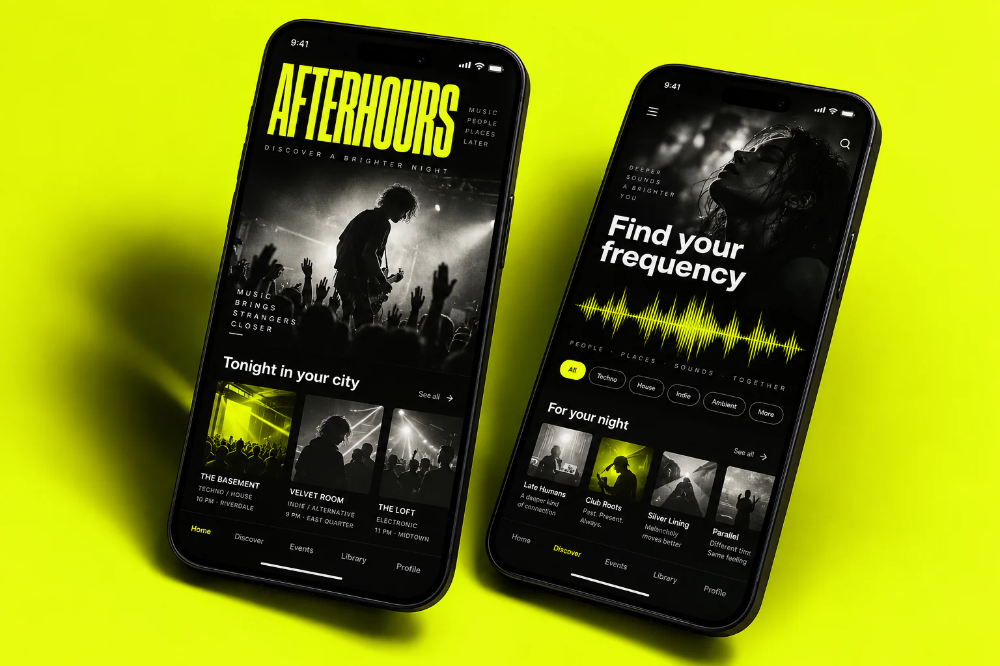

Find the visual language
A bold, high-contrast interface inspired by independent music posters. Acid yellow highlights actions while a dark listening surface gives artwork room to breathe.
Afterhours
A concept for finding intimate gigs and new sounds through the mood you are in.

Music discovery and gig planning often happen in separate places. This concept explores a single journey from finding a sound to finding a night out.
A bold, high-contrast interface inspired by independent music posters. Acid yellow highlights actions while a dark listening surface gives artwork room to breathe.
Discover by mood and genre, then explore nearby events.
Save artists and gigs in one personal collection.
Move from a track preview to the relevant event details.
A self-initiated concept exploring the product experience and visual direction.